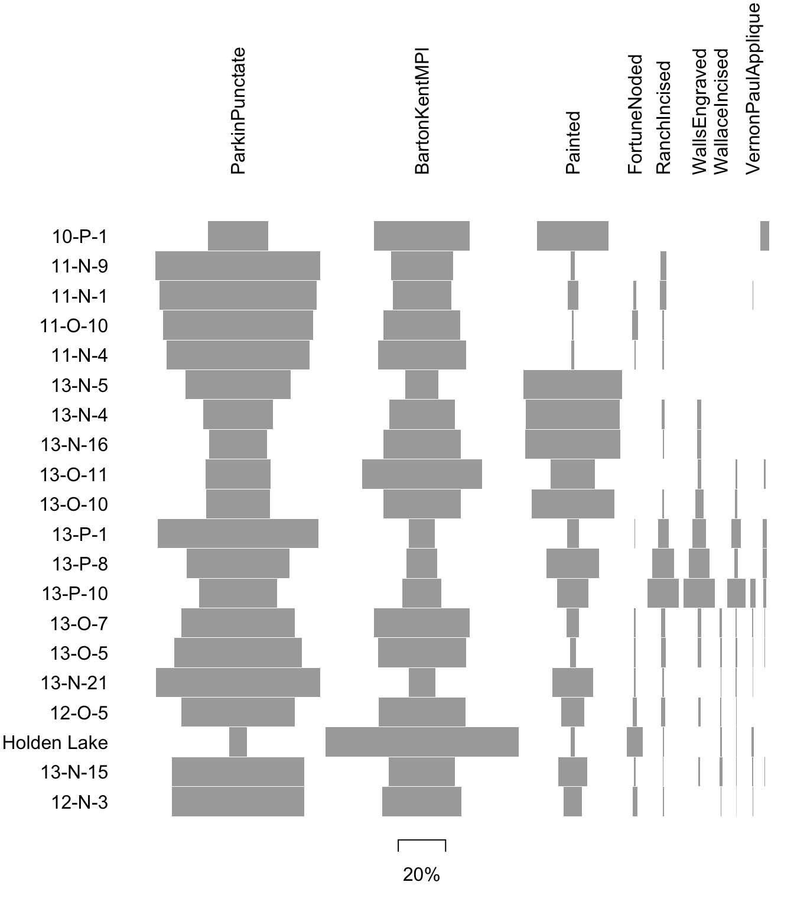
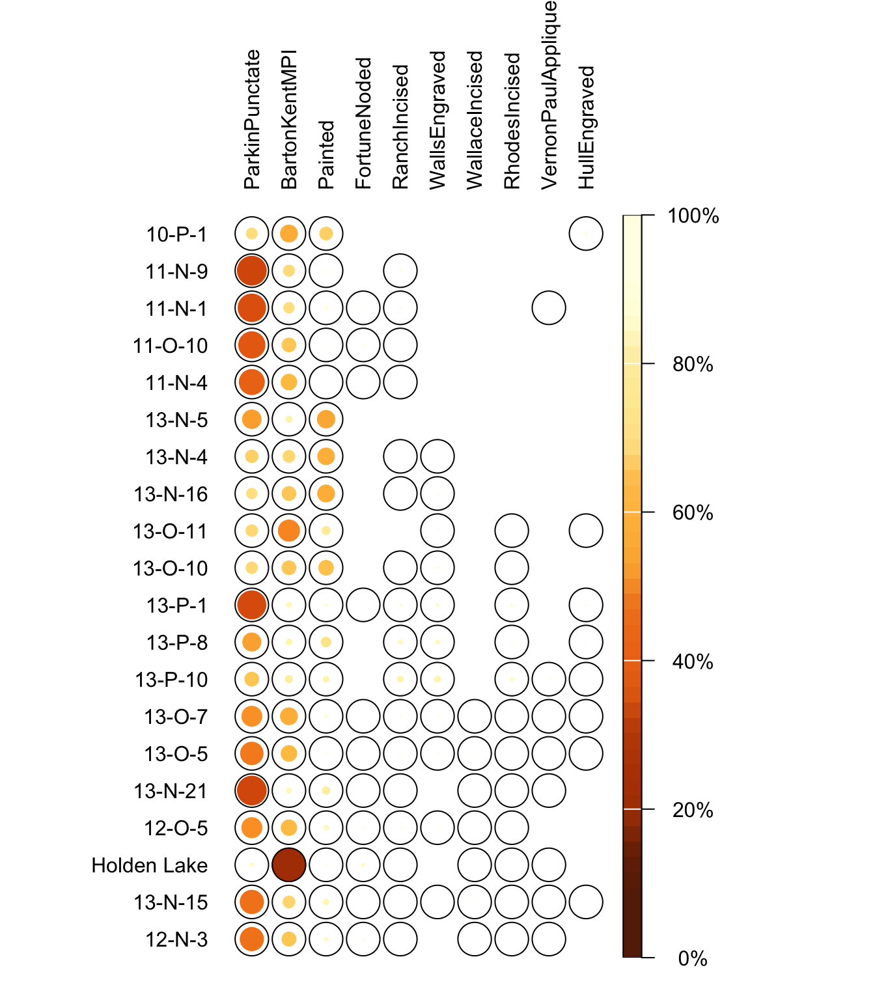
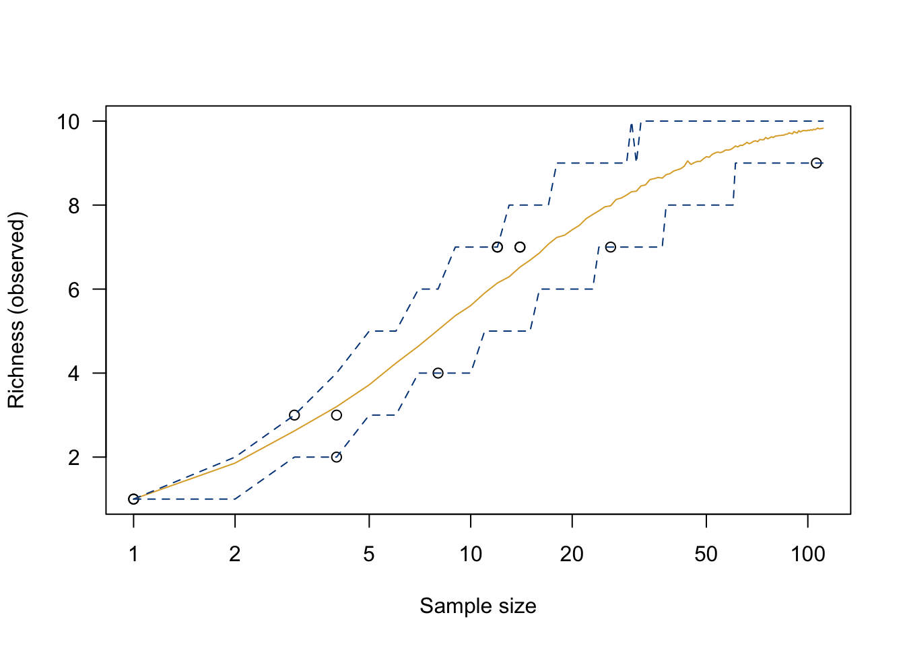

3 Working with Count Data
Archaeological data are commonly counts - of projectile points of various types, of donkey and zebra teeth, of diagnostic sherds associated with distinct periods or cultural groups, etc. These are commonly compared across time and space.
Some tools for working with count data, as well as sample data with which to work, can be found in Frerebeau’s tabula (Frerebeau (2019); not to be confused with the software tool for scraping data) and folio (Frerebeau (2025)) packages. The examples below are adapted from the tabula documentation.
3.1 Frequency
A look at ?mississippi will tell you that these are counts of ceramic types from 20 sites in the Lower Mississippi Valley (Lipo, Madsen, and Dunnell (2015)). These provide a useful example of archaeological count data (without necessarily entering into the theory and practice of seriation and arguments about cultural transmission).
library(tabula)
library(folio)
## Data from Lipo et al. 2015
data("mississippi")
kable(mississippi) %>% kableExtra::kable_classic(full_width = F)| ParkinPunctate | BartonKentMPI | Painted | FortuneNoded | RanchIncised | WallsEngraved | WallaceIncised | RhodesIncised | VernonPaulApplique | HullEngraved | |
|---|---|---|---|---|---|---|---|---|---|---|
| 10-P-1 | 39 | 62 | 46 | 0 | 0 | 0 | 0 | 0 | 0 | 6 |
| 11-N-9 | 528 | 198 | 13 | 0 | 19 | 0 | 0 | 0 | 0 | 0 |
| 11-N-1 | 865 | 323 | 59 | 17 | 35 | 0 | 0 | 0 | 4 | 0 |
| 11-O-10 | 404 | 208 | 6 | 16 | 4 | 0 | 0 | 0 | 0 | 0 |
| 11-N-4 | 764 | 470 | 18 | 5 | 9 | 0 | 0 | 0 | 0 | 0 |
| 13-N-5 | 35 | 11 | 33 | 0 | 0 | 0 | 0 | 0 | 0 | 0 |
| 13-N-4 | 71 | 67 | 96 | 0 | 3 | 4 | 0 | 0 | 0 | 0 |
| 13-N-16 | 42 | 56 | 69 | 0 | 1 | 3 | 0 | 0 | 0 | 0 |
| 13-O-11 | 35 | 65 | 24 | 0 | 0 | 2 | 0 | 1 | 0 | 1 |
| 13-O-10 | 61 | 74 | 79 | 0 | 2 | 8 | 0 | 2 | 0 | 0 |
| 13-P-1 | 244 | 40 | 18 | 1 | 16 | 21 | 0 | 14 | 0 | 6 |
| 13-P-8 | 83 | 25 | 43 | 0 | 18 | 17 | 0 | 3 | 0 | 3 |
| 13-P-10 | 30 | 15 | 12 | 0 | 12 | 12 | 0 | 7 | 2 | 1 |
| 13-O-7 | 590 | 498 | 67 | 10 | 21 | 19 | 12 | 8 | 7 | 1 |
| 13-O-5 | 923 | 637 | 42 | 12 | 33 | 27 | 15 | 13 | 5 | 2 |
| 13-N-21 | 426 | 69 | 105 | 4 | 4 | 0 | 1 | 4 | 1 | 0 |
| 12-O-5 | 204 | 156 | 42 | 7 | 8 | 4 | 2 | 1 | 0 | 0 |
| Holden Lake | 27 | 294 | 7 | 24 | 2 | 0 | 2 | 1 | 3 | 0 |
| 13-N-15 | 728 | 364 | 160 | 9 | 5 | 8 | 14 | 3 | 7 | 2 |
| 12-N-3 | 549 | 328 | 77 | 19 | 4 | 0 | 3 | 1 | 2 | 0 |
Archaeologists have been thinking about data like these for a long time! The method implemented by tabula is derived from James A. Ford’s ((1962)) book.

## Contingency Tablessee Shennan ((1997), Ch.13) see (Lewis (1986))
The occurence() function produces a contingency table, and plot_spot() is a tool for visualizing that contingency table (also, meet |>, another word for %>%).

3.2 Diversity measures
See Baxter 2001 (Baxter (2001)) Carlson ((2017), Ch.18)
## Data from Conkey 1980, Kintigh 1989, p. 28
data("chevelon", package = "folio")
## Measure diversity by comparing to simulated assemblages
chevelon |>
heterogeneity(method = "shannon") |>
simulate(seed = 12345) |>
plot()
